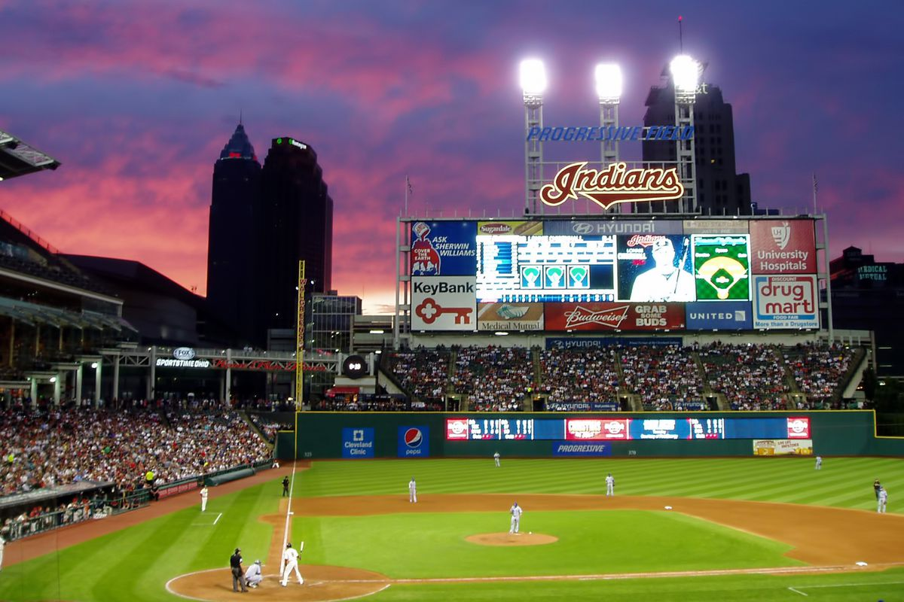
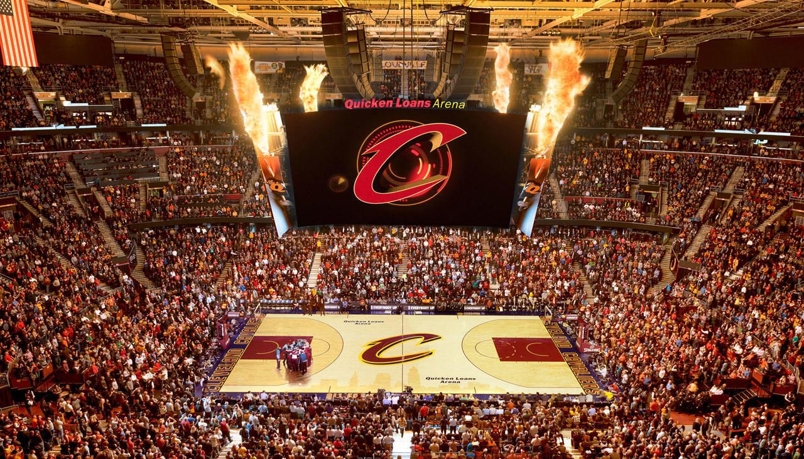
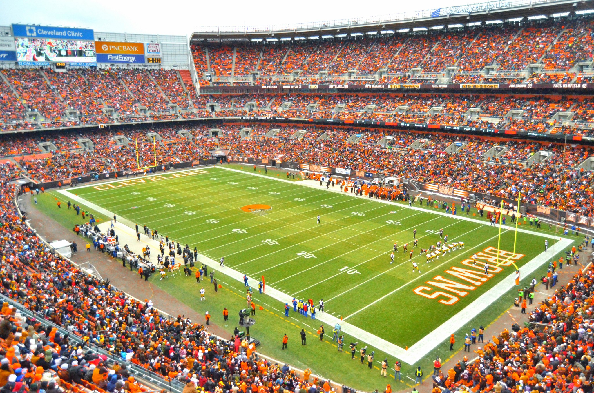

Clevelands Sports Teams
The Cleaveland Indians
If you're a baseball fan then you're definitely going to want to catch a game at Progressive Field. The Cleveland Indians are a great baseball team, they came very close to winning the World Series in 2016, but lost to the Chicago Cubs in a 4-3 series. The Indians came back the next year setting a new American League record of winning 22 games in a row. They are a great team playing in a beautiful stadium full of avid fans, food, drinks, and others. For more information about the Indians visit here. 
The Cleveland Cavaliers
Cleveland's NBA team is the Cleveland Cavaliers (often called the Cavs instead) as you may have already known. Their home arena/stadium is the Quicken Loans Arena. This arena is beautiful, the halftime show and jumbotron are always nice to watch while the Cavaliers are in their locker rooms during half time. The Cavaliers unfortunately have lost Lebron James as of July 2018, which he essentially was the team. The Cavaliers current record as of December 2018 is 5-18 without Lebron James, they are currently rebuilding their team with a lot of younger players. 
The Cleveland Browns
Cleveland's NFL team is the Cleveland Browns play at their home field, FirstEnergy Stadium. The stadium can hold 67,895 people in their massive stadium right off of Lake Erie. The Cleveland Browns have not had many successful seasons in quite some time, but the fans never give up on their home team. The browns have not wont a League Championship since 1964. Within their last 4 seasons they have won 8 ot of 64 games due to poor drafting choices, the team hasn't had much success.
